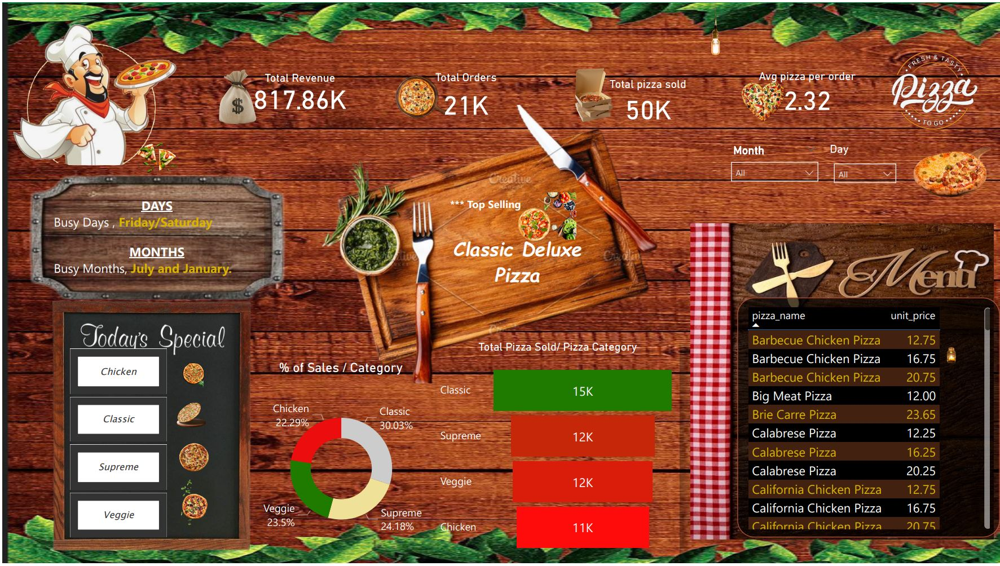

The Pizza Business Performance Dashboard
that provides real-time insights and analytics for a pizza restaurant
delivery service.
Offers a comprehensive overview of various aspects of the business's operations,
helping owners and managers make informed decisions to optimize performance and customer satisfaction.


The Road Accident Dashboard 2021-2022 is a data-driven platform created to analyze and monitor road accidents
that occurred during this specific time period. It serves as a vital resource for transportation authorities,
law enforcement, and policymakers,
offering a detailed, data-rich perspective on road safety and accident-related trends

The "PwC Call Center Trends Dashboard" is a sophisticated data visualization and analysis tool that focuses on monitoring and understanding the evolving trends in call center operations. It provides a comprehensive view of key performance indicators (KPIs), metrics, and insights related to call center activities, helping businesses optimize their customer support and communication strategies.

This holds my Tableau Projects

A "Netflix Dashboard" provide
insights and information related to the performance, content, and user engagement of the Netflix streaming platform.
It serves as a valuable resource for Netflix executives, content creators, and analysts,
offering a comprehensive view of key metrics and trends.
Here's a description of a hypothetical Netflix Dashboard

HR Analysis dashboards helps HR team to find out the major cause of their attrition rate. Here they can find out the attrition rate based on Gender,Job Role, Work life Balance.

Superstore dashboard analysis the sales and profit based on category , sub category, region.